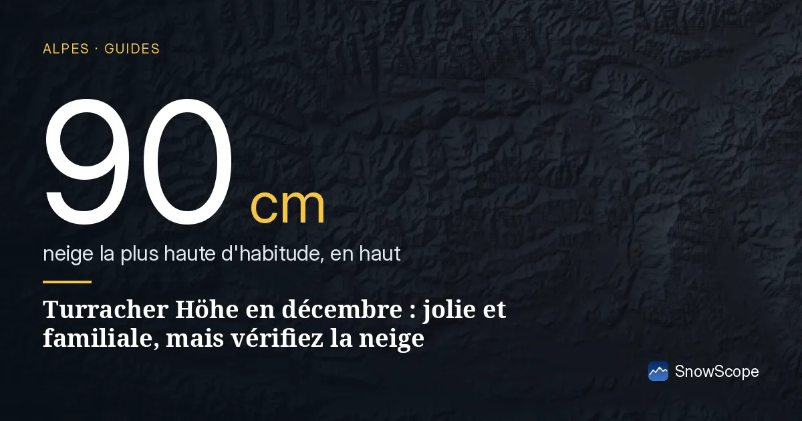
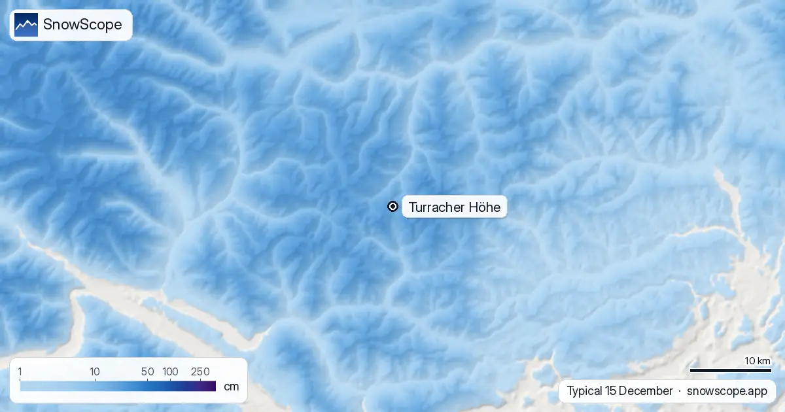

Turracher Höhe en décembre : jolie et familiale, mais vérifiez la neige
Le 15 décembre typique, Turracher Höhe affiche 23 cm de neige à mi-montagne (1 792 m) sur 46 hivers d'enregistrements. Seulement 39 pour cent de ces hivers avaient 30 cm ou plus dans la semaine du 15-21 décembre, ce qui signifie que début décembre est un pari.
Consultez les prévisions neige en temps réel pour Turracher Höhe sur l'application SnowScopeHauteurs de neige, alertes poudreuse et carte 3D, gratuitement.
Le défi à la base
Le village est situé sur un col élevé à 1 392 m, et cette altitude est le point faible en décembre. Selon les hivers passés, le 15 décembre typique n'apporte que 10 cm à la base. Dans la semaine du 15-21 décembre, seulement 4 pour cent des hivers ont atteint 30 cm là-bas. La neige arrive tard : le premier jour habituel avec 30 cm à mi-montagne est le 22 décembre.
Les dernières décennies montrent moins de neige en début décembre. La part des semaines de Noël avec 30 cm à mi-montagne a chuté de 67 pour cent dans les 15 premiers hivers (1980-81 à 1994-95) à 27 pour cent dans les 15 derniers (2011-12 à 2025-26). L'hiver dernier n'avait que 3 cm le 15 décembre à mi-montagne, donc les décembres minces arrivent.


Où skier si vous allez tôt
Les pentes supérieures offrent de meilleures chances. Au sommet (2 193 m), le 15 décembre typique a 34 cm, et 70 pour cent des hivers ont atteint 30 cm à Noël. Le dénivelé est de 801 m sur 34 km de pistes et 15 remontées, donc il y a de quoi travailler en montée et éviter le sol nu.
Le domaine convient aux familles avec 15 remontées réparties sur un terrain doux. Si vous allez avant le 22 décembre, prévoyez de passer plus de temps aux altitudes plus élevées et acceptez que les pistes basses soient minces ou fermées.
Épaisseur de neige par date
À mi-montagne, la progression est : 12 cm le 1er décembre, 23 cm le 15 décembre, 26 cm le 24 décembre, 28 cm le 31 décembre. Ce sont les épaisseurs typiques des hivers passés. Dans une année profonde (1 sur 10), mi-montagne atteint 48 cm le 15 décembre. Dans une année mince, seulement 4 cm.
L'étendue montre pourquoi décembre ici est incertain. Vous pouvez trouver une base décente d'ici Noël, ou vous pouvez trouver des rochers près de la surface. Le tableau de l'hiver complet est modeste : un pic typique à mi-montagne est 67 cm, et février est généralement le mois le plus profond, pas décembre.
Tarif : basse saison jusqu'au 24 décembre
Le forfait remontées 2026-27 propose un tarif basse saison du jour d'ouverture au 24 décembre, puis haute saison après. Le forfait jour adulte coûte 72,50 EUR dans les deux saisons. Le forfait 6 jours coûte 353 EUR en basse saison et 381 EUR en haute saison, donc l'économie se fait sur une semaine complète avant Noël, pas sur des jours individuels.
Réservez une semaine en basse saison et vous économisez 28 EUR sur un forfait 6 jours. Gardez de la flexibilité dans vos dates : la neige à mi-montagne atteint 30 cm seulement autour du 22 décembre en moyenne.
Alternative glacier au même prix
Mölltaler Gletscher se trouve dans la même province et coûte à peu près pareil. Sa remontée la plus basse est à 2 103 m avec 66 cm le 15 décembre typique, et 91 pour cent des hivers avaient 30 cm dans la semaine du 15-21 décembre. Le forfait 6 jours basse saison était 332 EUR sur sa dernière liste publiée (saison 2025-26).
Pour décembre, le glacier l'emporte sur l'épaisseur de neige et la date d'arrivée. Turracher Höhe l'emporte sur l'ambiance famille et les pistes basse altitude. À partir de janvier, la neige à mi-montagne à Turracher Höhe devient plus fiable.
Conseils aux skieurs
- Réservez une semaine complète en basse saison (avant le 24 décembre) pour économiser 28 EUR sur un forfait 6 jours. Évitez les jours seuls sauf si la neige est confirmée.
- Si vous visitez avant le 22 décembre, skiez la remontée du sommet. À 2 193 m, 70 pour cent des semaines de Noël avaient 30 cm contre 39 pour cent à mi-montagne.
- Vérifiez l'épaisseur de neige une semaine avant votre voyage. Les décembres minces arrivent ; l'hiver dernier n'avait que 3 cm à mi-montagne le 15 décembre.
- Prévoyez plus de temps en intérieur début décembre. La lumière du jour en décembre est courte à cette latitude, et la neige mince peut forcer des fermetures de pistes basses.
- Quitter la piste après une tempête : consultez le bulletin officiel d'avalanche de Lawinenwarndienst Steiermark (lawinen.report).
À propos de ces chiffres
Les hauteurs de neige des stations sont la neige la plus épaisse sur le haut du domaine à la date indiquée ; ce sont des estimations pour une zone, pas une mesure en un point. Les prévisions peuvent changer. Consultez toujours le bulletin d'avalanche officiel avant le hors-piste.
Bulletins d'avalanche officiels: Lawinenwarndienst Steiermark
Citer ce bulletin
Pour la recherche, l'enseignement ou la presse : chiffres et graphiques réutilisables librement sous CC BY 4.0 avec cette citation.
SnowScope (2026), Turracher Höhe en décembre : jolie et familiale, mais vérifiez la neige, https://snowscope.app/blog/fr/2026/11/turracher-hoehe-december-skiing-honest-snow-check.html, consulté le 2026-11-14
SnowScope (Atlas Labs). (2026, November 14). Turracher Höhe en décembre : jolie et familiale, mais vérifiez la neige. SnowScope snow reports. https://snowscope.app/blog/fr/2026/11/turracher-hoehe-december-skiing-honest-snow-check.html
BibTeX
@misc{snowscope2026turracherhoehedecembersk,
author = {{SnowScope (Atlas Labs)}},
title = {Turracher Höhe en décembre : jolie et familiale, mais vérifiez la neige},
year = {2026},
month = nov,
howpublished = {\url{https://snowscope.app/blog/fr/2026/11/turracher-hoehe-december-skiing-honest-snow-check.html}},
note = {Published 2026-11-14 20:14 UTC; accessed 2026-11-14}
}· CC BY 4.0 · Méthodes, données et outils →
Turracher Höhe : neige et température selon l'altitude, cet hiver vs l'hiver dernier (outils) →
Suivre Turracher Höhe
Gratuit : un message quand la neige arrive, et la météo chaque matin.